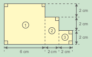
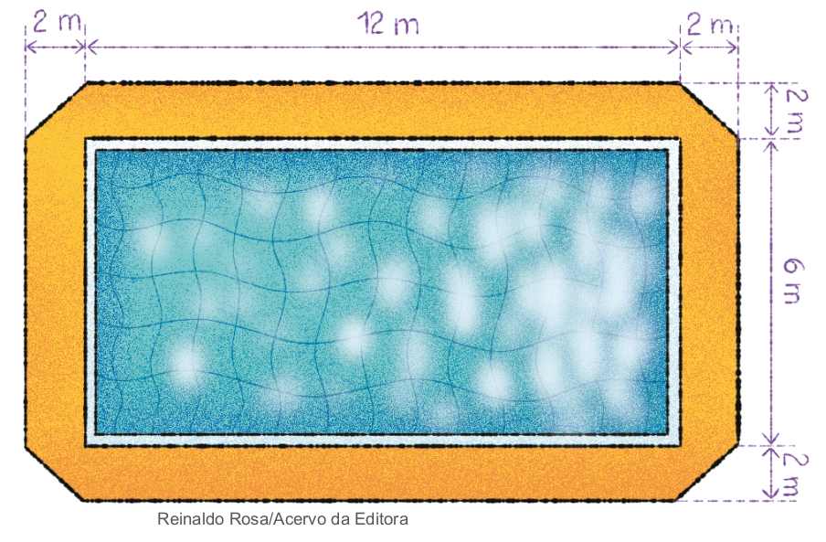

Para calcular a área do polígono apresentado no livro, será necessário decompor a figura em polígonos dos quais os alunos conheçam as fórmulas para calcular a área. A seguir, apresentamos uma possibilidade de resolução, porém ela não é única. Verifique com a turma quais foram as decomposições feitas e discutam se é possível fazer outras decomposições do polígono dado.
Este polígono, por exemplo, será dividido em três retângulos:
Área do retângulo I:
b ⋅ h = 3 ⋅ 1 = 3 cm².
Área do retângulo II:
b ⋅ h = 5 ⋅ 3 = 15 cm².
Área do retângulo III:
b ⋅ h = 3 ⋅ 1 = 3 cm².
A área do polígono é dada pela soma das três áreas.
3 cm² + 15 cm² + 3 cm² = 21 cm² A área do polígono é de 21 cm².
O geoplano também pode ser utilizado para exploração do cálculo de áreas de polígonos formados por figuras planas das quais conhecemos as fórmulas para cálculo. Veja a seguir, sugestões de polígonos que podem ser construídos utilizando-se o geoplano.
CAPÍTULO 3 - Cálculo da área de polígonos pela decomposição em figuras planas
Observe o polígono a seguir:


1. Como é possível calcular a área desse polígono? Troque ideias com um colega e verifiquem as possibilidades.
a) Registrem no caderno e depois calculem.
Para calcular a área de algumas figuras planas, devemos decompô-las em polígonos aos quais suas fórmulas sejam conhecidas para o cálculo da área. Dessa forma, a área da figura plana será igual à soma das áreas calculadas.
Observe outra situação. Vamos calcular a área da região colorida da figura.

Nesse caso, devemos calcular a área do quadrado e subtraí-la da área do losango.
Área do quadrado: \(\ell^{2} = 2^{2} = 4cm^{2}\).
Área do losango: \(\dfrac{D \cdot d}{2} = \dfrac{8 \cdot 4}{2} = 16cm^{2}\)
Área da região colorida: 16 cm2 - 4 cm2 = 12 cm².
Logo, a área da região colorida é igual a 12 cm².
94
UNIDADE 3 - CAPÍTULO 3
Encontre soluções
Atividade 1
a)
A1: 6 · 6 = 36 cm²
A2: 2 · 4 = 8 cm²
A3: 2 · 2 = 4 cm²
Atotal: 36 + 8 + 4 = 48 cm²
Perímetro:
7 · 2 + 3 · 6 = 14 + 18 = 32 cm.
b)
A1: \(\dfrac{3 \cdot 8}{2} = \dfrac{24}{2} = 12 cm^{2}\)
A2: 9 · 8 = 72 cm²
Atotal: 12 + 72 = 84 cm²
Perímetro:
2 · 5 + 2 · 9 + 8 = 36 cm.
Atividade 2
a) A trapézio:
A = \(\dfrac{(6+10) \cdot 5}{2} = \dfrac{16 \cdot 5}{2} = \)
= 40 cm2
A quadrado: 2 · 2 = 4 cm²
Acolorida = Atrapézio ‒ Aquadrado =
40 - 4 = 36 cm²
b) Aretângulo: 12 · 8 = 96 cm²
Aquadrado: 2 · 2 = 4 cm²
Acolorida = Aretângulo ‒ Aquadrado =
96 - 4 = 92 cm²
Atividade 3
a) Ainicial: 30 · 40 = 1 200 cm²
b) Perímetro: 2 · 40 + 2 · 30 = 140 cm.
c) Atotal: 44 · 34 = 1 496 cm²
ENCONTRE SOLUÇÕES
1. Em seu caderno, calcule a área e o perímetro das figuras planas a seguir.
a) Área: 48 cm².
Perímetro: 32 cm.
![Ilustração de três formas geométricas na cor roxa, dois quadrados e um retângulo vertical, unidas pelas laterais. O lado direito de uma forma, é também o lado esquerdo da forma subsequente. As três formas unidas se assemelham a uma escada de três degraus. Setas abaixo e na lateral direita indicam as dimensões das formas geométricas. Da direita para esquerda: Um quadrado com 2cm de lado, depois, um retângulo na vertical, com 2cm de base e 4 cm de altura, e por último, outro quadrado, com 6cm de lado.](../../resources/images/unidade3/capitulo3/imagem3.png)
b) Área: 84 cm².
Perímetro: 36 cm.

2. Em seu caderno, calcule a área da região colorida.
a) 36 cm².
b) 92 cm².

3. Joana pintou uma tela e mandou colocar uma moldura de 2 cm de largura.

a) Qual é a área inicial da tela, antes da colocação da moldura? 1 200 cm²
b) Qual é o perímetro da tela sem a moldura? 140 cm
c) Qual é a área total do quadro, com a moldura? 1 496 cm²
d) Qual é o novo perímetro do quadro, após a colocação da moldura? 156 cm²
4. Uma folha de papel retangular medindo 12 cm por 18 cm (figura 1) foi dobrada, conforme a figura 2. 144 cm²
![Duas figuras geométricas. A primeira é o papel retangular com os vértices nomeados de A, B, C, D. A letra A é o vértice superior esquerdo. A letra B, o vértice superior direito. A letra C é o vértice inferior direito. A letra D, o vértice inferior esquerdo. A outra figura geométrica é o vértice da letra B da figura anterior dobrado para baixo formando um triângulo. O triângulo tem os vértices nomeados de A, B, E. A letra A é o vértice superior esquerdo. A letra B é a letra B anterior dobrada formando um ângulo reto de 90 graus. A letra E está à direita de B, sendo que B e E formam a base do triângulo.](../../resources/images/unidade3/capitulo3/imagem8.png)
Sabendo que CE = 12 cm, qual a área do polígono ADCEB?
5. Elabore uma situação-problema envolvendo figuras geométricas planas e o conceito do cálculo de área de uma superfície. Troque seu caderno com um colega, para que um resolva o problema do outro e, juntos, verifiquem se a resolução foi feita corretamente. Resposta pessoal.
d) Perímetro: 2 · 34 + 2 · 44 = 68 + 88 = 156 cm.
Atividade 4
A área do polígono é a área do retângulo menos 2 vezes a área do triângulo.
Solicite aos alunos que coloquem as medidas numa folha e façam a dobra para visualizar a situação proposta.
Ao realizar a dobra, o triângulo formado é retângulo, portanto a altura coincide com a medida de um dos lados.
Aretângulo: 12 · 18 = 216 cm²
Atriângulo: A = \(\dfrac{6 \cdot 12}{2} = \dfrac{72}{2} = 36 cm^{2}\)
Área do polígono ADCEB: 216 - 36 - 36 = 144 cm².
95
UNIDADE 3 - CAPÍTULO 3
Atividade 7
Ao considerar que uma camiseta tem a parte da frente e a de trás, temos:
\(4 \cdot (25 \cdot 25) + 2 \cdot (60 \cdot 100) - 1 \left( \dfrac{20 \cdot 10}{20}\right) = 4 \cdot 625 + 2 \cdot 6000 - 100 = 14400 cm^{2} = 1,44 m^{2}\)
Atividade 8
Observe que, na primeira dobra, a área cinza é formada por um quadrado de 12 cm de lado e um triângulo de base e al- tura iguais a 12 cm. Calculando a área dessa figura, temos:
Área do quadrado:
12 ⋅ 12 = 144 cm².
Área do triângulo:
\(\dfrac{12 \cdot 12}{2} = \dfrac{144}{2} = 72 cm^{2}\)
Área total:
144 + 72 = 216 cm².
Com a segunda dobra, forma-se outra figura igual. Assim, a área total do polígono é 2 ⋅ 216 = 432 cm².
Atividade 9
O polígono possui 28 lados, sendo assim, a medida de cada lado corresponde a 56 : 28 = 2 cm.
Decompondo o polígono em quadrados, temos que ele é composto de 25 quadrados de lados iguais a 2 cm. A área de cada quadrado é igual a 4 cm2. Portanto, a área do polígono é igual a 25 ⋅ 4 = 100 cm².
6. Uma piscina retangular tem 6 m de largura por 12 m de comprimento. Em seu contorno, foi colocado piso antiderrapante com 2 m de largura, exceto nos cantos, conforme a figura.
Quantos m² de piso foram colocados ao redor da piscina? Atotal: 2 · 2 · 12 + 2 · 2 · 6 + 4 · 2 = 80 m²
7. Para participar de uma festa à fantasia, um grupo de amigos fez camisolões com a estampa de monstros, conforme o desenho a se- guir. Quantos m2 de tecido foram gastos na confecção de cada camisolão?
![Ilustração de um molde de camisolão amarelo com um desenho de monstrinho roxo na frente, com medidas marcadas em vermelho. As partes do molde são figuras geométricas: as mangas são quadradas, a frente um retângulo e a gola um triângulo invertido. As medidas da parte superior do camisolão são: o lado do quadrado das mangas esquerda e direita medem 25 cm; as retas do ombro, que ligam as mangas à gola e a base do triângulo, que é a parte aberta da gola, medem 20 cm cada. A altura do triângulo é 10 cm e da cava da manga até a barra mede 75 cm](../../resources/images/unidade3/capitulo3/imagem10.png)
8. (OBMEP) Uma tira retangular de cartolina, branca de um lado e cinza do outro, foi dobrada como na figura, formando um polígono de 8 lados. Qual é a área desse polígono?
a) 216 cm²
b) 265 cm²
c) 348 cm²
d) 432 cm²
e) 576 cm²

9. (OBMEP) A figura representa um polígono em que todos os lados são horizontais ou verticais e têm o mesmo comprimento. O perímetro desse polígono é 56 cm. Qual é sua área?

a) 25 cm²
b) 50 cm²
c) 75 cm²
d) 100 cm²
e) 125 cm²
96
UNIDADE 3 - CAPÍTULO 3